跟打模式
把回合动作整理成表格后交给悬浮窗执行，表格形式不限（文字/图片/辟雍学府json），支持多种导入方式。
非盈利、无广告，献给所有鸟玩家的安卓端自动化工具
YuanAssist 面向需要工具完成高频重复操作，以及想要录制表格和表格跟打的玩家。 可以自动适配不同机型（不支持iPhone系统）。
功能概览
把回合动作整理成表格后交给悬浮窗执行，表格形式不限（文字/图片/辟雍学府json），支持多种导入方式。
直接操作就可以同时记录，录制完成的脚本可以保存、导入和复用，适合生成表格以及洞窟重复操作。
可以一键导入任何形式的攻略表格图片，OCR转化为可运行脚本。
围绕高频任务做模块化入口，例如刷鸟食、刷624和其他重复操作。
攻略板块有其他广陵王上传的攻略，支持一键导入。
针对星石背包场景，可以进行拼图获取完整星石截图。并且可以一键统计星石数量，减少整理信息的时间成本。
YuanAssist支持识别设备ID一键注册，没有繁琐的步骤。注册后支持发布自己的攻略和脚本，成为创作者。
在目前图像识别和无障碍模式的支持下，YuanAssist未来可以为更多任务提供自动化支持。
上手教程
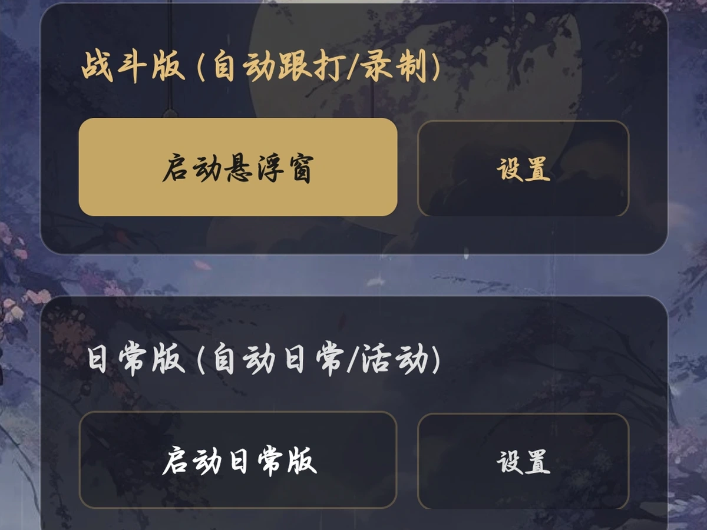
点击之后，系统会跳转应用权限页面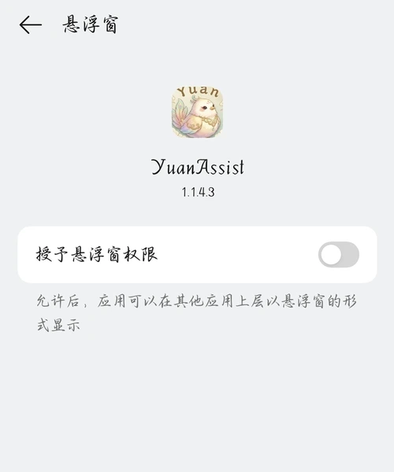
悬浮窗权限只需要第一次运行授予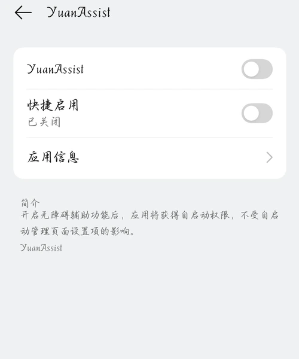
无障碍权限每次运行都要重新授予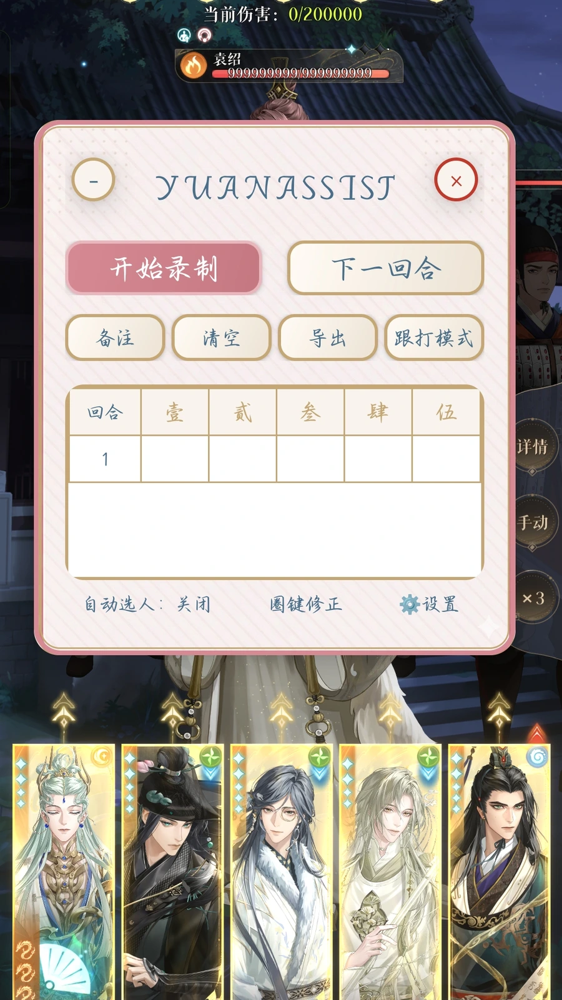
点击开始录制，并点击左上角最小化。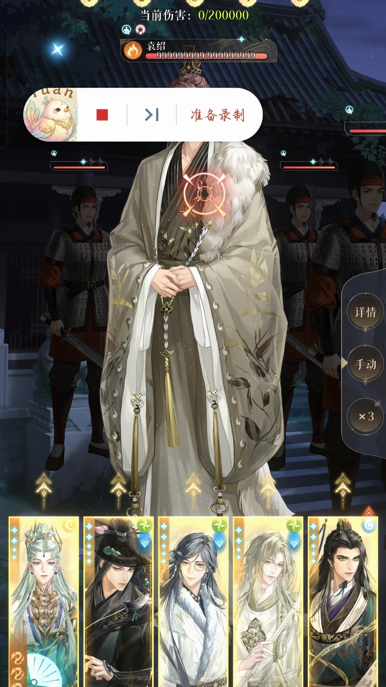
正常操作即可，打完一个回合后，需要手动点击》|切换回合。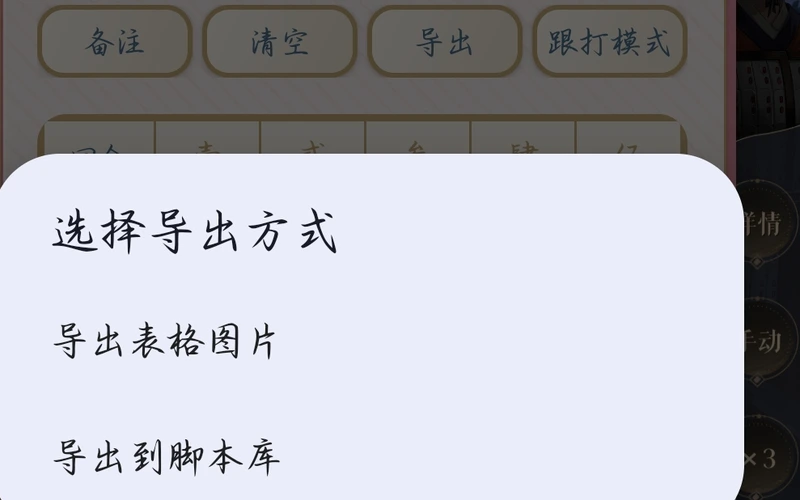
可导出到脚本库或者导出图片。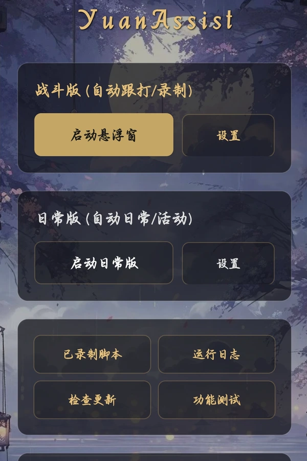
点击日常版的设置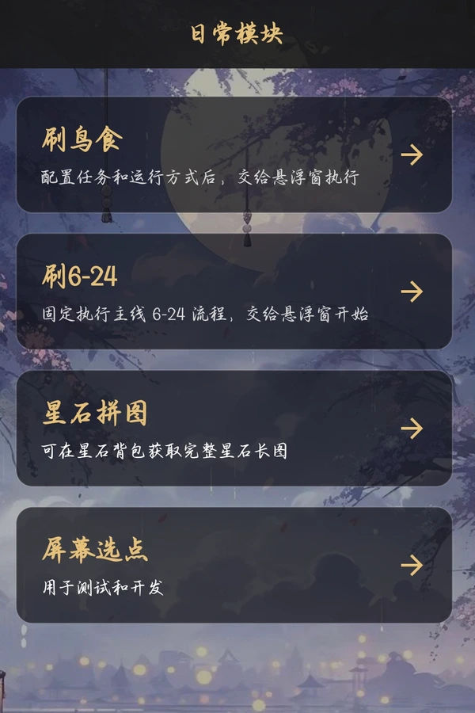
点击你想要进行的任务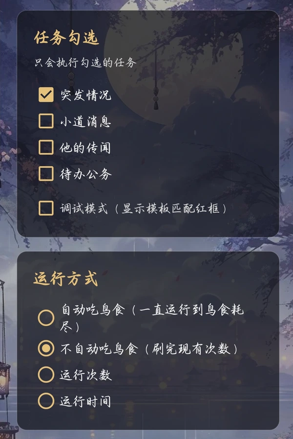
点击导入,,切回游戏运行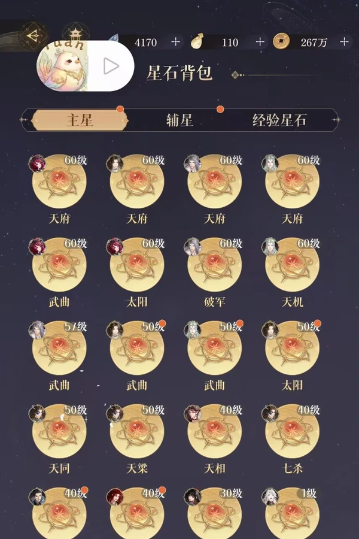
星石拼图开始位置如图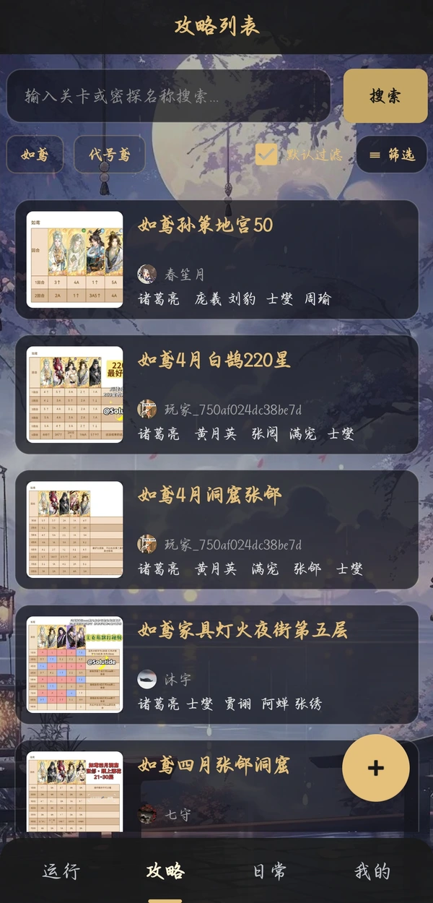
选择心仪的攻略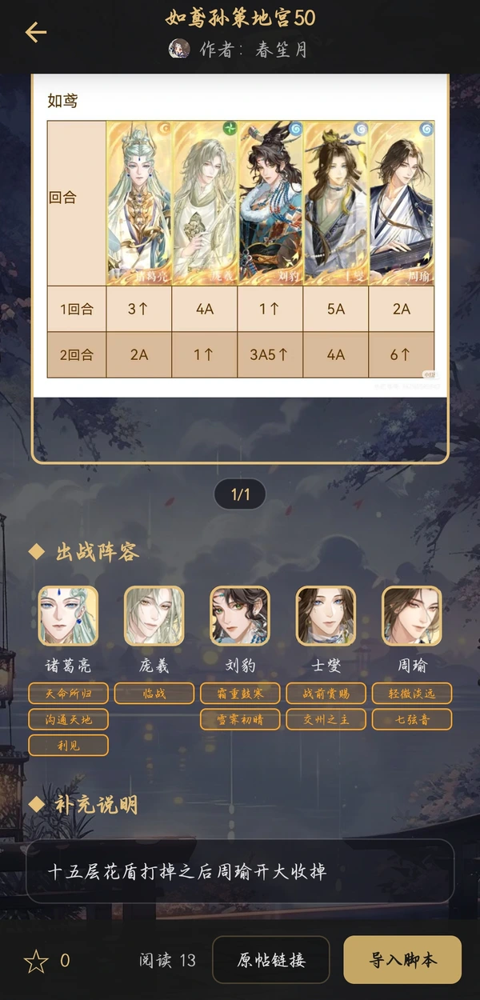
检查练度、注意事项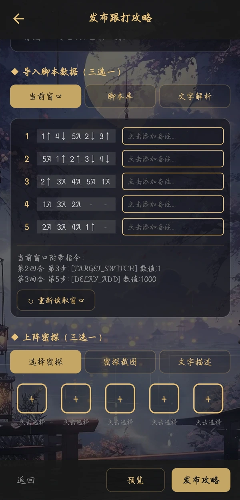
点击主页＋号进入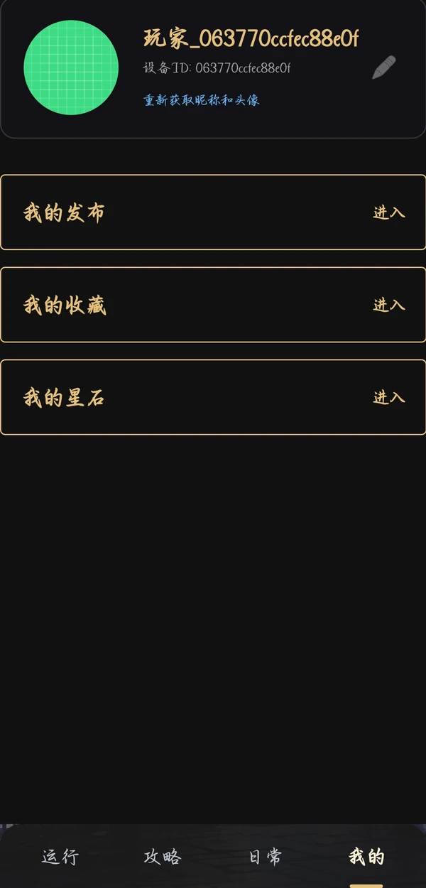
修改/删除发布的攻略常见问题
A：版本有更新时，点进软件会有公告。点击主页检查更新，可选应用内更新/浏览器更新。
A：鸿蒙部分版本无法启用无障碍权限，请见谅。
A：一种可能是延时设置的短了，部分机型存在小概率（约十分之一）点击无效的情况。如无法解决，请联系作者进行义诊。
A：1.可能是网络卡顿，导致操作游戏画面未及时切换。2.可能是某张素材在您的手机上不太适配，替换方法见下问。3.可能是您的手机运行时有卡顿感，刷鸟食和刷624设置界面都有低配机型适应，在网络/设备不良的情况下，可以试试改成500ms。
A：主页-功能测试-上传停止位置的截图-选择对应的文件-点击一键替换，就可以使用自己截图的素材了，百分百能匹配到。若是对应的文件不清楚，请私信询问。
A：如果停止的那一次运行日志有内容，请带上运行日志最后的片段截图。
A：有，但是YuanAssist原码已上传github，只使用无障碍权限的点击操作，本质上是自动化工具，不修改游戏数据，和maayuan原理一致。
A：没有，因为iPhone没有无障碍权限。
A：理论上可以，但是我试了mumu模拟器无法获取屏幕截图，其他模拟器或许可行，另外模拟器建议使用maayuan。